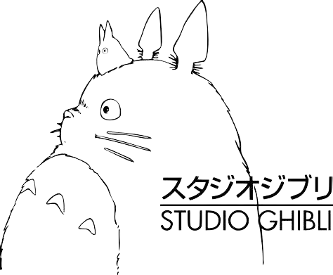

El estudio ha creado algunas de las películas animadas más icónicas y queridas,
que abarcan una amplia gama de géneros y temas.
La historia sigue Chihiro, una niña de 10 años que junto con sus padres, se encuentra atrapada en un misterioso mundo sobrenatural después de que sus padres son transformados en cerdos glotones. Trabaja en un baño público regentado por una misteriosa bruja con la esperanza de encontrar una forma de liberar a sus padres y regresar al mundo real.
La historia sigue a Sophie, una joven sombrerera que, después de ser maldecida por una bruja y transformada en una anciana, busca refugio en el castillo ambulante de Howl, un mago con un pasado misterioso.
La trama sigue a Ponyo, una pececita dorada con un espíritu curioso que anhela convertirse en humana. Después de escapar de su hogar submarino, se encuentra con un niño humano llamado Sosuke y desarrolla una amistad con él. Sin embargo, su deseo de convertirse en humana desencadena eventos mágicos y desafíos para ambos mundos.
Studio Ghibli, hogar de las más cautivadoras historias animadas, ha tejido un legado que va más allá de la pantalla. Con su maestría en la animación y narrativas atemporales, han creado mundos donde la magia y la realidad se entrelazan, capturando corazones en todo el mundo. Sus personajes icónicos y mensajes universales han transcendido fronteras culturales, tejiendo sueños que perduran en el imaginario colectivo. Studio Ghibli no solo cuenta historias, sino que crea experiencias que nos transportan a universos llenos de asombro y emoción. En cada trazo y en cada fotograma, el estudio japonés sigue tejiendo sueños inolvidables para las generaciones presentes y futuras.
Muchas películas de Studio Ghibli presentan una conexión profunda entre los personajes y la naturaleza. Estos filmes a menudo enfatizan la importancia de respetar y proteger el medio ambiente. Ejemplos incluyen "Mi Vecino Totoro", donde los personajes interactúan con espíritus de la naturaleza, y "La Princesa Mononoke", que aborda el conflicto entre la industrialización y la naturaleza.
El viaje del protagonista hacia el crecimiento personal y la autodescubrimiento es un tema recurrente en las películas de Ghibli. Los personajes a menudo enfrentan desafíos, superan obstáculos y descubren su verdadera identidad a lo largo de la historia. "El Viaje de Chihiro" es un ejemplo notable en el que la protagonista experimenta una transformación significativa en su viaje.
Studio Ghibli ha abordado el tema de la guerra y la paz en varias de sus películas. "La Tumba de las Luciérnagas" es un ejemplo conmovedor de esto debido a que muestra los horrores de la guerra desde la perspectiva de dos niños. Incluso en películas más fantásticas como "El Castillo Ambulante", se tocan temas de conflicto bélico y de como estos llegan a tener impacto en la sociedad.
© 2023 Copyright: Nairuma Fernández